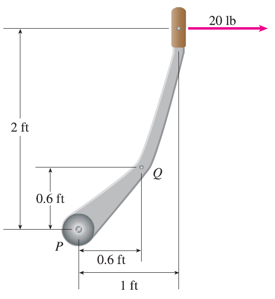

A horizontal force of 20 lb is applied to the handle of a gearshift lever as shown. Find the magnitude of the torque about the pivot point P.
Find the magnitude of the torque about P if the same force is applied at the elbow Q of the lever.
